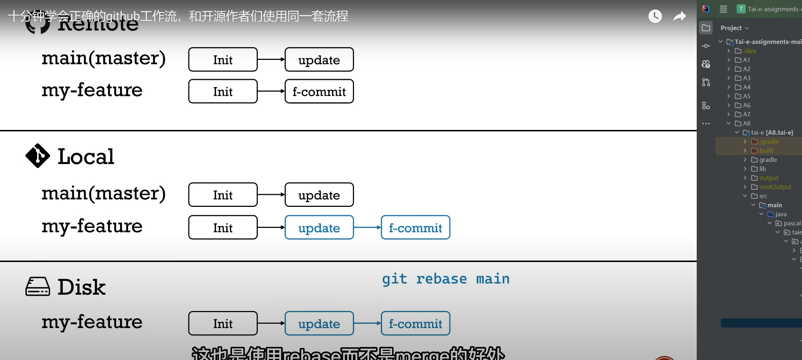
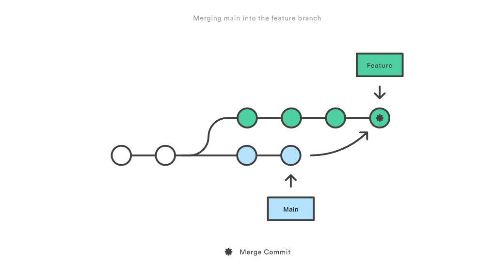
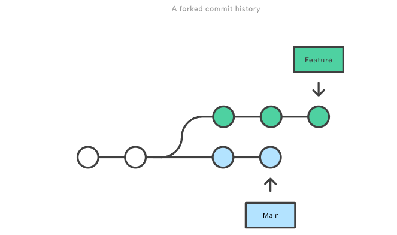

Git
好的资料¶
https://slides.tonycrane.cc/PracticalSkillsTutorial/2023-spring-cs/lec2/#/2/4 https://www.liaoxuefeng.com/wiki/896043488029600/896067074338496 https://space.bilibili.com/35894086/channel/collectiondetail?sid=941763
一图胜千言¶


 只有本地仓库和远程仓库位于同一commitID两者才能交互 stash发挥作用
只有本地仓库和远程仓库位于同一commitID两者才能交互 stash发挥作用
git push¶
push 的时候 名称不一样怎么办
ChatGPT:
如果本地分支与远程仓库的对应分支的名称不一样，你可以在 git push 命令中指定远程分支的名称。语法如下：
git push <远程仓库名称> <本地分支名称>:<远程分支名称>
git merge 如果没有冲突只是在移动指针 有冲突的话 从工作区-》暂存区-》本地仓库 发生变化 产生一个新的commit节点 以下是导致合并冲突的常见情况：
同时修改同一行代码：如果两个分支上的修改都涉及同一行代码，那么 Git 无法自动确定应该保留哪个修改。
删除或重命名文件：如果一个分支删除了一个文件，而另一个分支修改了该文件，或者两个分支重命名了同一个文件，那么合并时会出现冲突。
合并历史中的分叉：如果要合并的两个分支之间的提交历史有分叉，即它们有共同的祖先但在某一时刻分开发展，那么合并时可能会产生冲突。
修复bug时，我们会通过创建新的bug分支进行修复，然后合并，最后删除；
当手头工作没有完成时，先把工作现场git stash一下，然后去修复bug，修复后，再git stash pop，回到工作现场；
在master分支上修复的bug，想要合并到当前dev分支，可以用git cherry-pick
git branch¶
git 切换分支时
如果切换的分支和当前分支属于同一个commit节点，那么会把未add或未commit的内容带过去
不属于同一个commit节点的，那么在当前节点没有commit的情况下是无法切换的(这就引出了git stash 的作用)
git stash¶
git stash 命令会将工作目录中未提交的修改（包括已跟踪的文件和暂存区中的修改）保存起来，以便稍后恢复使用。存储的这些修改并不直接保存在仓库中，而是保存在Git的存储区域中。具体来说，git stash 将修改存储在栈中，可以通过 git stash list 命令查看当前存储的所有 stashes。
存储的修改会以栈的形式存储，你可以通过 git stash apply 命令来将最新的 stash 应用到工作目录中，或者通过 git stash pop 命令来应用并从 stash 栈中移除最新的 stash
常用场景¶
- 切分支修bug 开发到一半 无法提交
- 代码开发完了，准备提交 同事修改了同一个文件，出现远端冲突 先stash 再拉 再 pop 处理冲突后提交
关于 commit message¶
意义是什么：记录更改的原因 / 内容，方便定位 / 回溯（特别是合作项目）
Angular 规范（来源：angular/angular:CONTRIBUTING.md）
[body]
[footer] type：更改类型（fix/feat/docs/refactor/perf/test/ci/...） 重大更改可以写 BREAKING CHANGE 或 DEPRECATED（全大写） scope：影响范围（可选，比如具体影响的模块等） summary：更改的简要描述，英文一般现在时，首字母小写句末无句号 body：详细描述，可选 footer：解决 issue 了可以写 Fixes #id 或 Closes #id
分支¶
什么是分支名：和 HEAD 一样，也是一个指针（实际上叫引用 ref）
可以基于 ref 使用 ~ 或 ^ 定位父提交
~ 表示第一个父提交，~2 表示第一个父提交的第一个父提交
^ 表示第一个父提交，^2 表示第二个父提交
一个提交可能会有多个父提交（merge commit）
什么时候无法push pull git pull=git fetch+merge|rebase¶
远程仓库和本地仓库不是同一个commitId||远程本地有冲突||未提交本地或者暂存区内容
要了解 git rebase，首先要明白的是它解决的问题与 git merge 一样。这两个命令都是将本地仓库一个分支的变更集成到另一个分支    git rebase main在main的基础上测试当前修改commmit git rebase 的黄金法则是永远不要在公有分支上使用它。 git merge git rebase 区别
{kind=link}
{kind=link}
{kind=link}